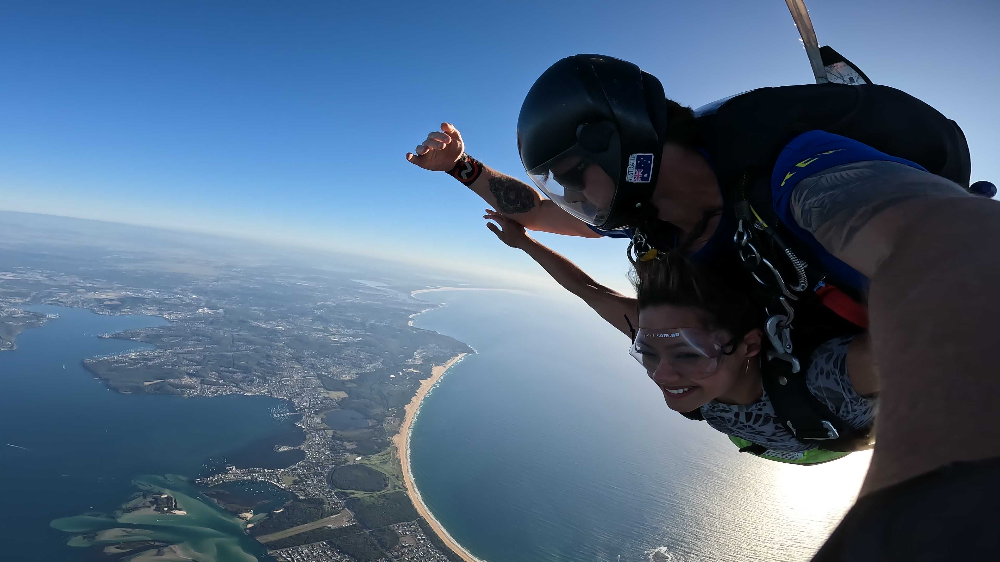
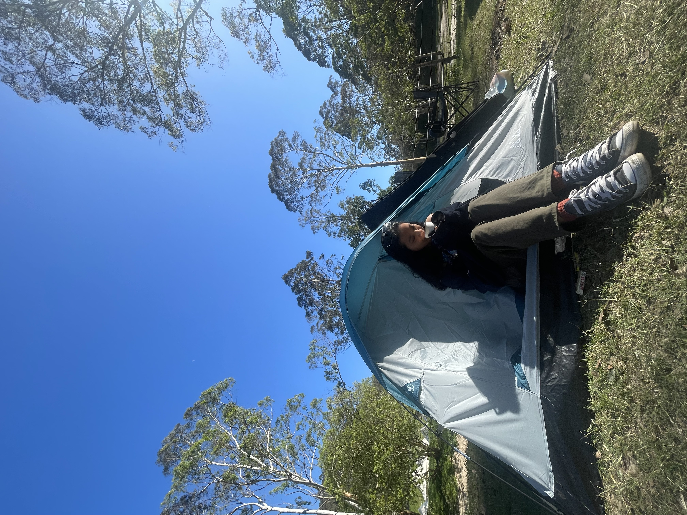
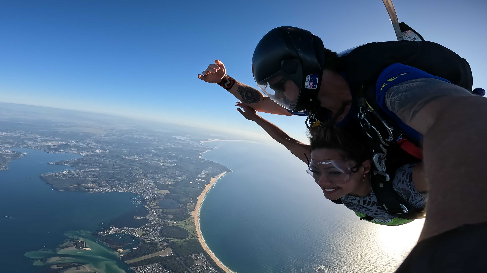
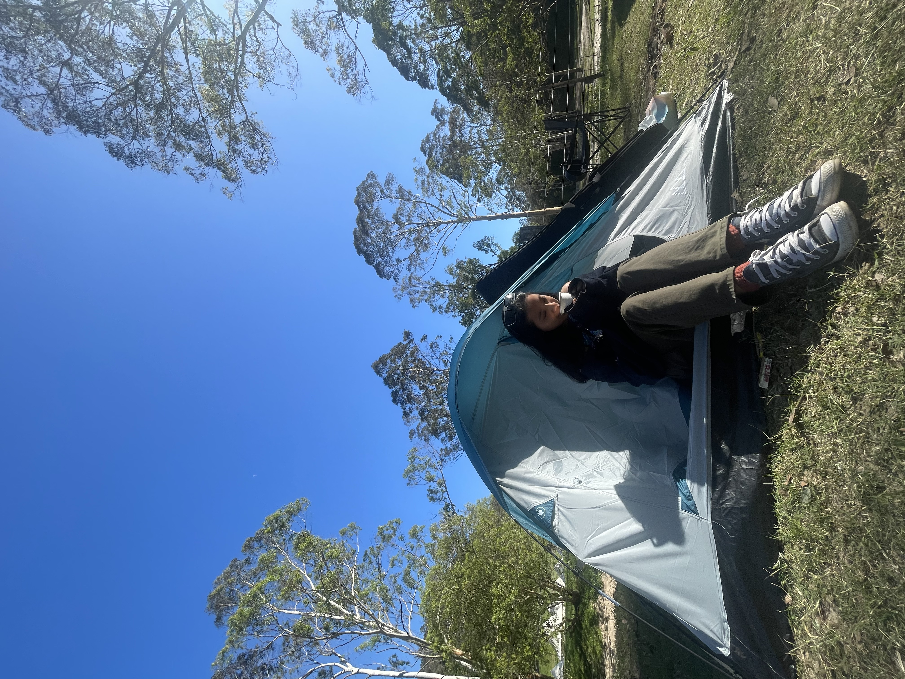

My Hobbies

I'm someone with a deep love for learning and exploring new things. My hobbies are all over the map—from knitting and singing to photography and modeling. I find joy in every new skill I pick up, even if I'm not a master at any of them. For me, it's all about the journey, the adventure, and the thrill of trying something new. And you know what? That's perfectly okay! I amm happy with who I am and proud of the balance I've found between my passions and my career goals. Each of these brings me a unique kind of joy and allows me to express different sides of myself. If you're curious to see what I've been up to. I'd love for you to check a glimpse into my world, full of creativity, fun, and a little bit of everything I love!
- Digital content creating
- Traveling and adventure
- Singing

 


